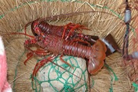

いせえび（伊勢海老）の漁獲量 都道府県ランキング
1位から3位までと、とれた量
いせえびが日本でいちばん多くとれるのは千葉県です。249 tで、全国（954 t）の26%を占めます。

| 順位 | 都道府県 | 漁獲量 | 全国に占める割合 |
|---|---|---|---|
| 1位 | 千葉県 | 249 t | 26% |
| 2位 | 三重県 | 119 t | 12% |
| 3位 | 和歌山県 | 72 t | 7.5% |
この数字について
- 分類：海老の仲間
- 全国の漁獲量：954 t
- この数字が表すもの：漁獲量（海でとった重さ。養殖は含みません）
- 調査：海面漁業生産統計調査（海面漁業） 令和6年
- 19県分を調査（調査していない県は順位に入りません）
いせえびの漁獲量について、よくある質問
- いせえびの漁獲量が日本一の都道府県はどこですか？
- 千葉県です。海面漁業生産統計調査（海面漁業）（令和6年）で249 tでした。
- いせえびの漁獲量ランキング2位・3位はどこですか？
- 2位は三重県（119 t）、3位は和歌山県（72 t）です。
- いせえびの全国の漁獲量はどれくらいですか？
- 954 t（令和6年）です。